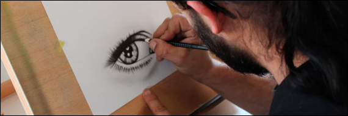

El dibujo artístico se caracteriza por mostrar de forma gráfica, todo lo que no se puede expresar en palabras, es una disciplina que se basa en el trazado y delineado de figuras y/o formas que expresan de manera visual, las ideas y sentimientos del artista.
La pintura es el arte de la representación gráfica utilizando pigmentos mezclados con otras sustancias aglutinantes orgánicas o sintéticas. En este arte se emplean técnicas de pintura, conocimientos de teoría del color y de composición pictórica, y el dibujo.
La fotografía creada de acuerdo con la visión del artista como fotógrafo. Usar la fotografía como medio para dar vida a algo que solo vive en la mente del artista. Capturar lo que ve de manera artística es el arte de la fotografía y no crear arte
El arte digital es una disciplina creativa cuya principal característica es que se manifiesta mediante el uso de tecnologías digitales, ya sea en el proceso de producción, en su exhibición o en ambos